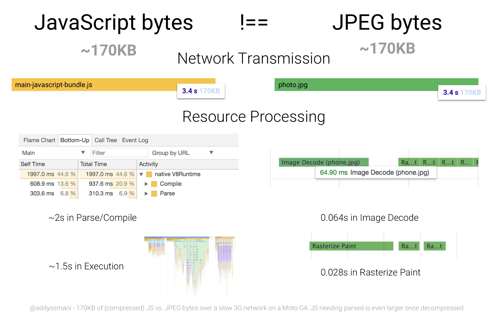

WebAssembly
Nicht(!) klausurrelevant
Historie
Idee: weniger Sprachfeature anbieten ermöglicht schneller Ausführung
~2013: Erste Gehversuche bei Mozilla,
Projektname asm.js
JS-subset um von OdinMonkey in quasi nativer Performance ausgeführt zu werden
~2017: Breiter Konsenus aller Browserhersteller, WebAssembly in Chrome, Safari, Firefox und Edge
WebAssembly
ist der Zugang zu "low-level" Performance im Web
(vergleichbar mit Java-Native-Interface)
WebAssembly wird in einem Binärformat an den Browser geschickt, anstatt im Klartext
Binärformat kann in einem Textformat angezeigt werden (WAT, nicht zu verwechseln mit WAT)
WebAssembly #2
wird in einer Sandbox ausgeführt
(entsprechend der von JS)
findet auch außerhalb des Webs Einsatzmöglichkeiten (z.B. Shopify Functions)
WebAssembly Binärformat
Source: Parse/Compile by Addy Osmani
WebAssembly Textformat
JavaScript
export default (lhs, rhs) => {
return lhs + rhs
}
WebAssembly Textformat
WAT vs. WASM
Wasm Text Länge: 167
Wasm Binary Länge: 41
Wasm im Browser laden
Native Unterstützung via "WebAssembly"-API: MDN
Moderne API: WebAssembly.instantiateStreaming
WebAssembly.instantiateStreaming(source[, importObject])
source: Quelle für die WebAssembly Binärdatei
importObject: Quelle für alle imports des WebAssembly-Modules
Wasm im Browser laden
WebAssembly.instantiateStreaming(fetch("simple.wasm")).then(
(results) => {
// Do something with the results!
// e.g. call exported methods via:
// results.instance.exports
},
);
Wasm im Browser laden
Beispiel: 01_add-function/add.html